infer.RmdIf you want to reproduce exactly the same results as the ones shown in this tutorial, you need to set the seed of your random number generator to zero:
This tutorial illustrates the main functionality of TransPhylo, which is to infer a transmission tree given a dated phylogeny. We will use the same dated phylogeny tree that was generated in the tutorial on simulations:
library(ape)
phy<-read.tree(text='((4:1.257652937,(1:1.231048819,5:1.519248672):0.303038892):0.784065883,(3:1.643413444,(6:0.656820028,2:0.007344035611):0.7562780805):1.293120815);')
plot(phy)
axisPhylo(backward = F)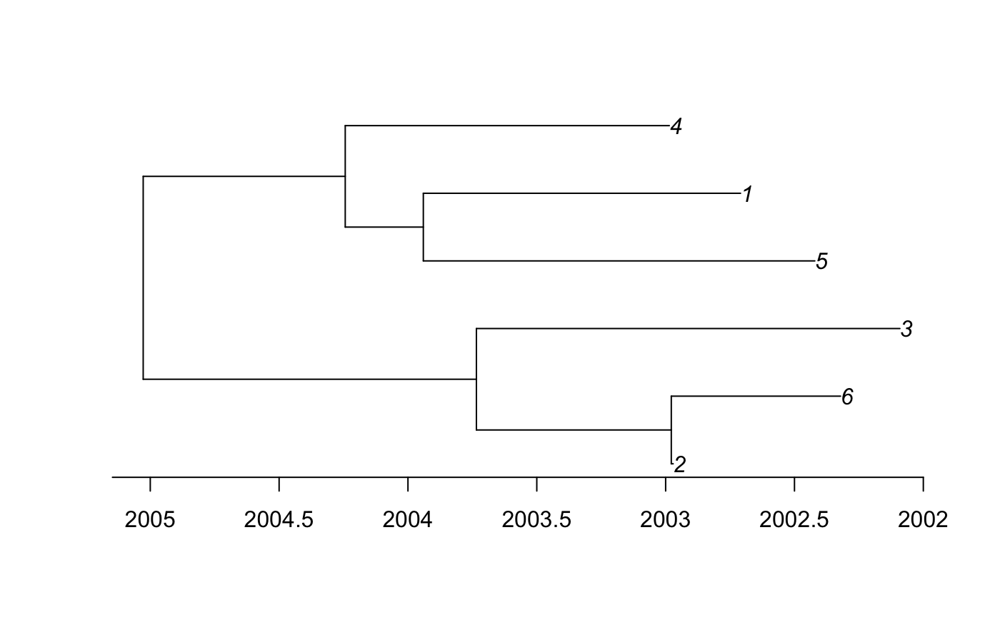
Because such a phylogeny is dated relatively and not absolutely, we also need to indicate when the last sample was taken, which in the simulation above was equal to 2007.964:
ptree<-ptreeFromPhylo(phy,dateLastSample=2007.964)
plot(ptree)TransPhylo also needs to know the parameters of the Gamma distribution representing the generation time. In the simulation above we assumed that these parameters were equal to (10,0.1), and so this is what we specify below. However, if you are using your own data, you should set these values to something sensible for your pathogen of interest.
w.shape=10
w.scale=0.1Finally TransPhylo needs to know the time at which observation of cases stopped. In the simulation above this was equal to 2008, and so this is what we specify below. However, if you are using your own data, you should set this equal to the date when observation stopped for your outbreak of interest. It might be today’s date if you are doing a real-time genomic epidemiology investigation. It can even be set equal to Inf if you are confident that the outbreak is finished and that there will be no cases in the future, for example if you are analysing an old outbreak which is clearly finished.
dateT=2008The MCMC procedure to infer the transmission tree given the phylogenetic tree can be run as follows:
res<-inferTTree(ptree,mcmcIterations=1000,w.shape=w.shape,w.scale=w.scale,dateT=dateT)The last command returned a record of all MCMC iterations. Traces of the MCMC can be plotted as follows:
plot(res)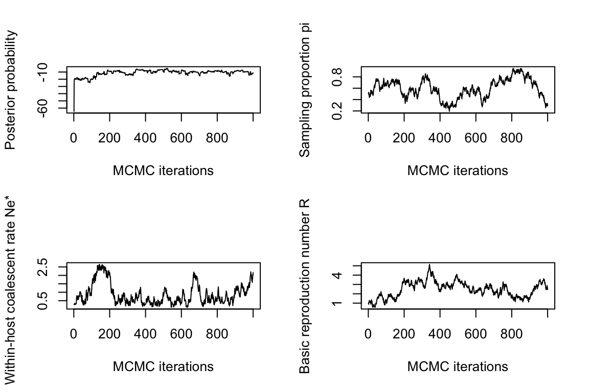
These traces need to look stable (after initial convergence) for the MCMC to be well mixed and the results to be meaningful. Otherwise, the MCMC needs to be run for longer by increasing the mcmcIterations parameter in the inferTTree function (in the example above we had mcmcIterations=1000 which was clearly not sufficient).
Further assessment of the MCMC convergence and mixing can be obtained using the CODA package, for example to obtain the effective sample size (ESS) of parameters as follows, making sure that the ESS of each parameter is at least 100:
library(coda)
mcmc=convertToCoda(res)
effectiveSize(mcmc)## pi neg off.r off.p
## 6.648218 3.688619 6.650971 0.000000Based on the MCMC sample, we can find the most representative (aka medoid) colored tree as follows:
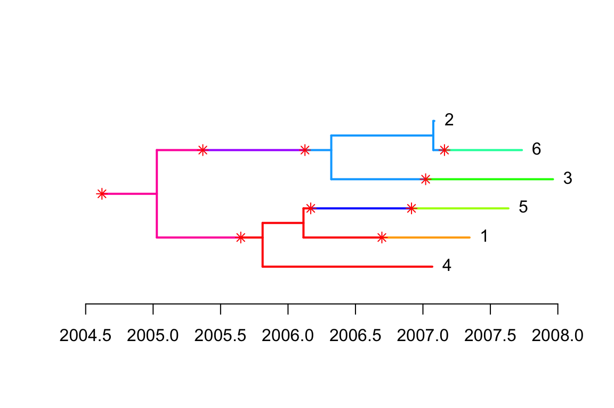
We can plot the corresponding transmission tree:
ttree=extractTTree(med)
plot(ttree,type='detailed',w.shape,w.scale)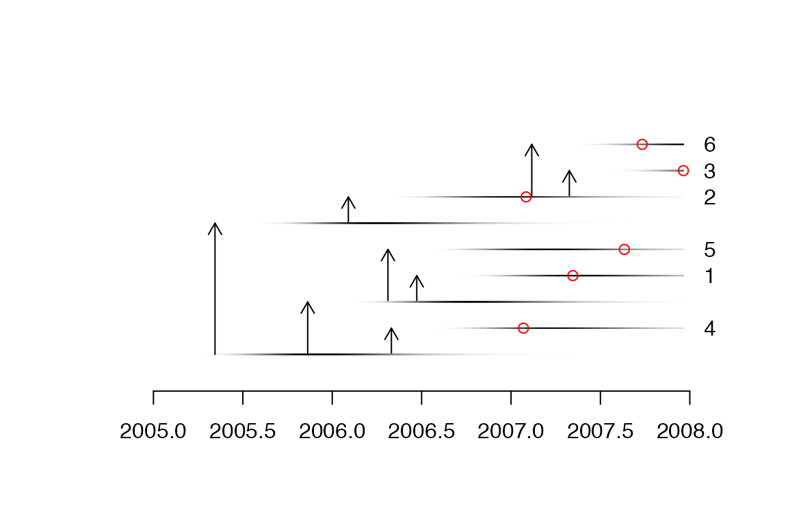
A matrix of probability of direct transmission for all pairs of individuals can be drawn as follows:
mat=computeMatWIW(res)
lattice::levelplot(mat,xlab='',ylab='')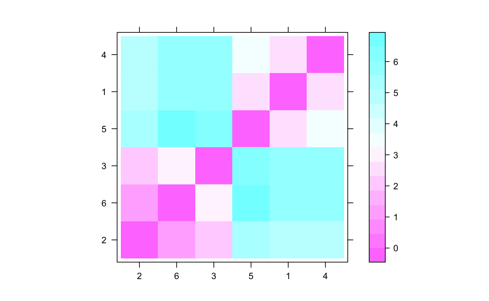
It is also possible to plot a matrix indicating for each pairs of individuals how many intermediates there are in the transmission chain:
mat=computeMatTDist(res)
lattice::levelplot(mat,xlab='',ylab='')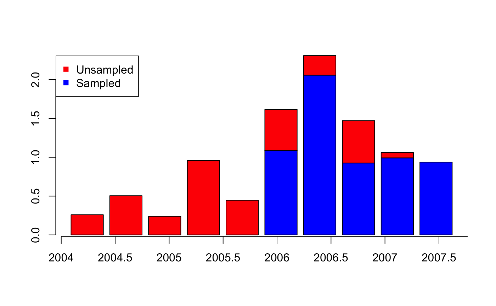
Plot of sampled and unsampled cases over time:
a=getIncidentCases(res,show.plot = T)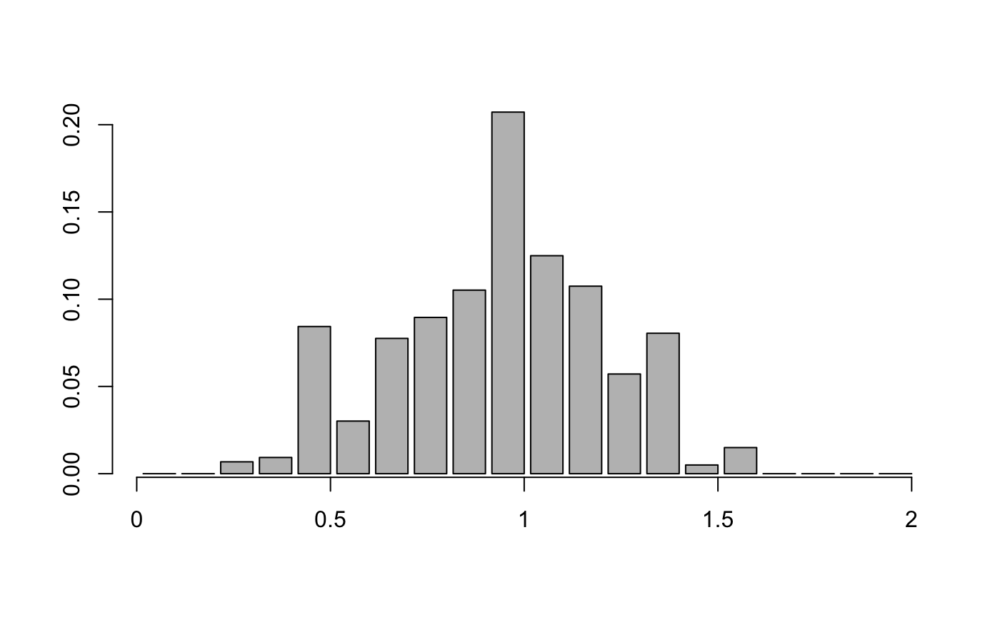
Distribution of realised generation times:
a=getGenerationTimeDist(res,show.plot = T)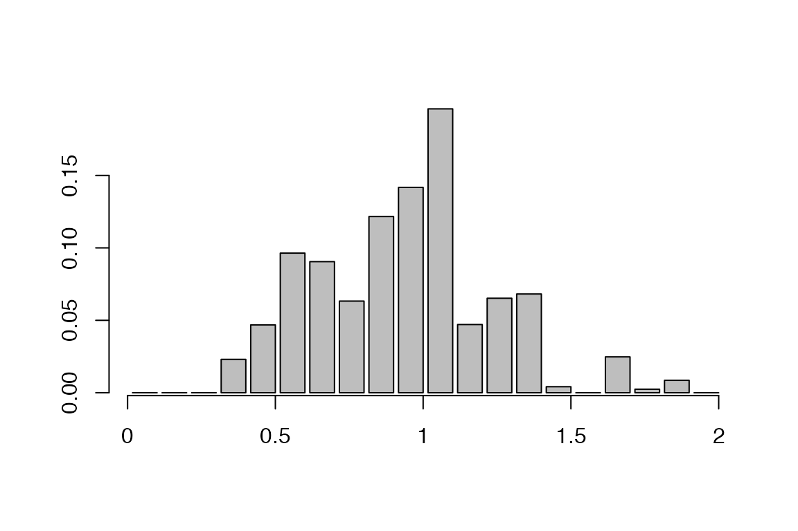
Distribution of realised sampling times:
a=getSamplingTimeDist(res,show.plot = T)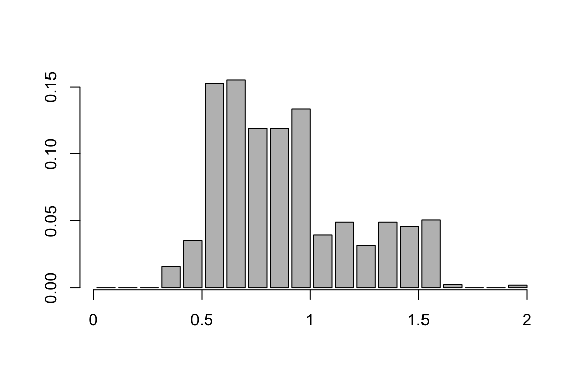
Distribution of infection time for the individuals labelled ‘1’ and ‘2’:
a=getInfectionTimeDist(res,k=c('1','2'),show.plot = T)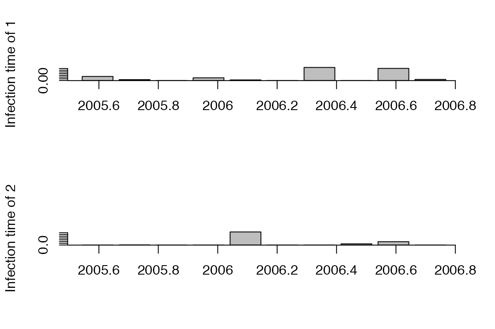
Offspring distribution for the individuals labelled ‘1’ and ‘2’:
a=getOffspringDist(res,k=c('1','2'),show.plot = T)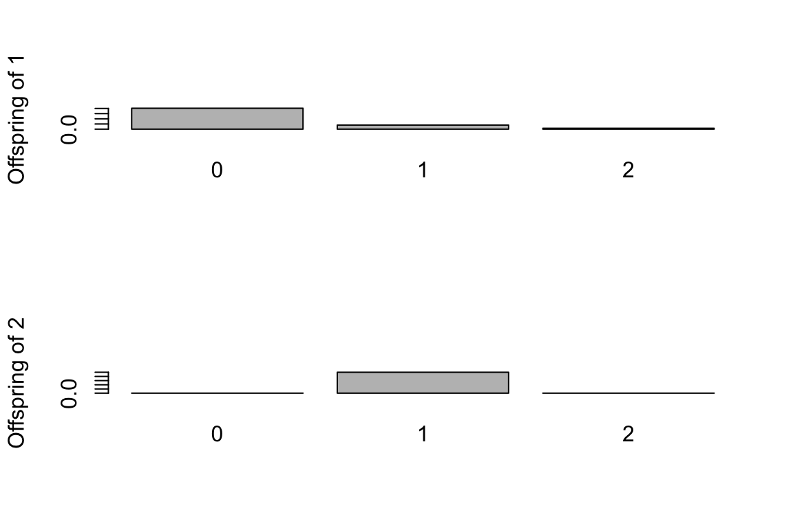